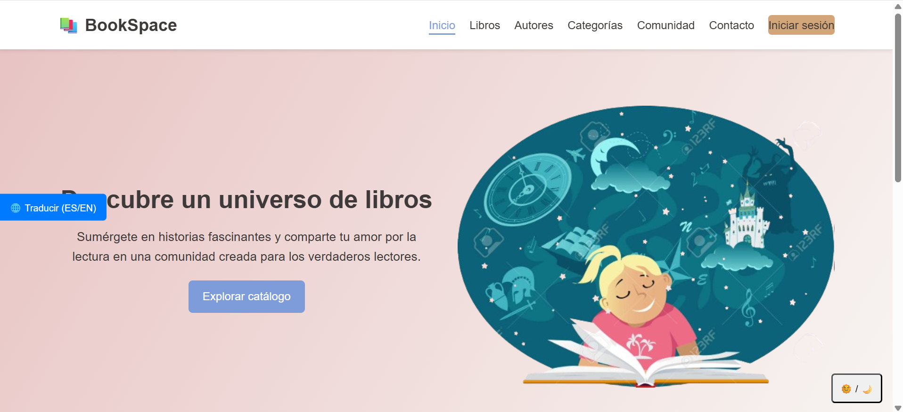

Soy practicante de desarrollo en software enfocado en QC (Quality Control) en Globant, donde me enfoco en garantizar la calidad del software mediante pruebas funcionales, validación de procesos y análisis de resultados. Me apasiona asegurar que cada producto cumpla con altos estándares antes de llegar al usuario final, combinando atención al detalle con pensamiento crítico. Cuento con conocimientos en tecnologías como Java, Python y JavaScript,sql,css,html y bootstrap lo que me permite entender mejor el comportamiento de las aplicaciones y colaborar de manera efectiva con equipos de desarrollo. Además, tengo experiencia utilizando herramientas de control de versiones como Git y GitHub, facilitando el trabajo en equipo y la gestión de cambios en los proyectos. Me considero una persona en constante aprendizaje, interesada en seguir fortaleciendo mis habilidades tanto en testing como en desarrollo, con el objetivo de crecer profesionalmente y aportar valor en cada proyecto en el que participo.
🧭 Sobre mí
🛠️ Tecnologías


HTML • CSS • Bootstrap


JavaScript • Java • Python

SQL
📊 Mis habilidades
⚓ Proyectos recientes

Proyecto 1
pagina web de libros.

Proyecto 2
aplicacion web de quiz.

Proyecto 3
pagina web de cafe gatuno.

Proyecto 4
Otra pagina web de un cafe gatuno.
Proyecto 5
Profe no abra este >:C
📜 Artículos
Cómo iniciar en programación
Iniciar en la programación puede parecer abrumador al principio, pero con un enfoque correcto se vuelve un proceso claro y motivador. Lo primero es entender que no necesitas saberlo todo desde el inicio; lo importante es comenzar con bases sólidas. Puedes empezar eligiendo un lenguaje amigable como Python o JavaScript, ya que son muy utilizados y tienen una gran comunidad. Es recomendable aprender los conceptos fundamentales como variables, condicionales, ciclos y funciones, antes de pasar a temas más avanzados. A medida que avances, lo más importante es practicar constantemente. Crear pequeños proyectos, como una calculadora o una página web básica, te ayudará a entender cómo aplicar lo que aprendes. También es clave apoyarte en recursos como documentación oficial, cursos en línea y comunidades de desarrolladores. Aprender a buscar soluciones en internet es una habilidad fundamental en este mundo. La programación no se trata solo de escribir código, sino de resolver problemas de manera lógica y eficiente.
Buenas prácticas en desarrollo
Para crecer en el mundo de la programación no solo basta con saber código, también es importante desarrollar buenas prácticas. Una de las más importantes es escribir código limpio y organizado, utilizando nombres claros para variables y funciones, lo que facilita la lectura y el mantenimiento. Otra práctica clave es el uso de control de versiones con herramientas como Git, lo cual permite llevar un historial de cambios y trabajar en equipo de manera más eficiente. Además, es fundamental probar tu código constantemente para evitar errores y asegurar su correcto funcionamiento. La documentación también juega un papel importante: comentar tu código y explicar lo que hace cada parte ayuda tanto a otros desarrolladores como a ti mismo en el futuro. Por último, mantener una mentalidad de aprendizaje continuo es esencial, ya que la tecnología cambia constantemente. Ser disciplinado, curioso y constante te permitirá desenvolverte mejor en este campo y avanzar de manera sólida en tu carrera como desarrollador
💬 Sugerencias
📡 Contacto
Puedes encontrarme en:
💻 GitHub 🔗 LinkedIn📧 sebasder181@gmail.com